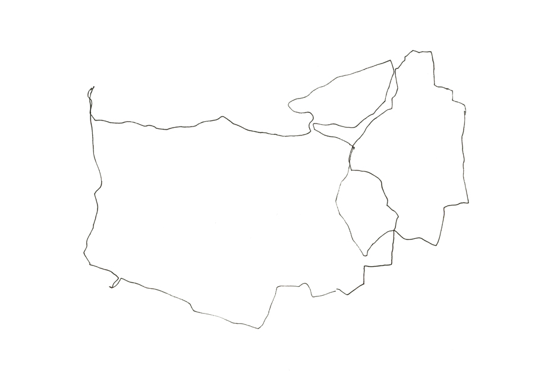

Daily movements
Instead of measuring my daily movements with quantitative data like 'average speed', 'distance traveled' or 'achievements' I began to register my daily movements in patterns. Leaving room for own interpretation and assigning emotions to it.
Documentation
